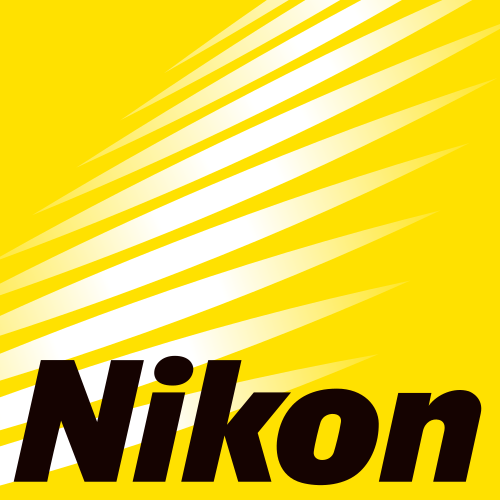
Unifocaux ou progressifs : nous avons sélectionné pour vous le meilleur de la technologie japonaise Nikon, fabriquée en France à Provins (77).
L'excellence de la technologie Nikon pour les porteurs à fortes corrections. SeeMax AP offre une vision nette et précise quel que soit l'axe du regard, grâce à un calcul des verres systématiquement optimisé en fonction de la monture choisie.
Les porteurs de lunettes les plus exigeants. Particulièrement adapté aux astigmates et aux porteurs de lentilles.
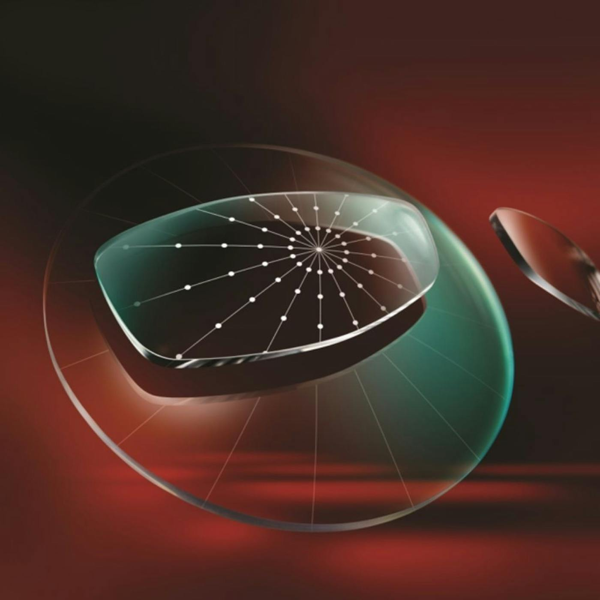
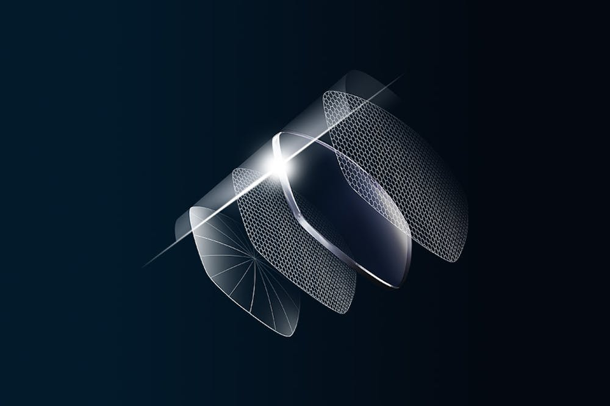
Une vision nette et précise quel que soit l'axe du regard, même en zone périphérique, pour un confort exceptionnel au quotidien.
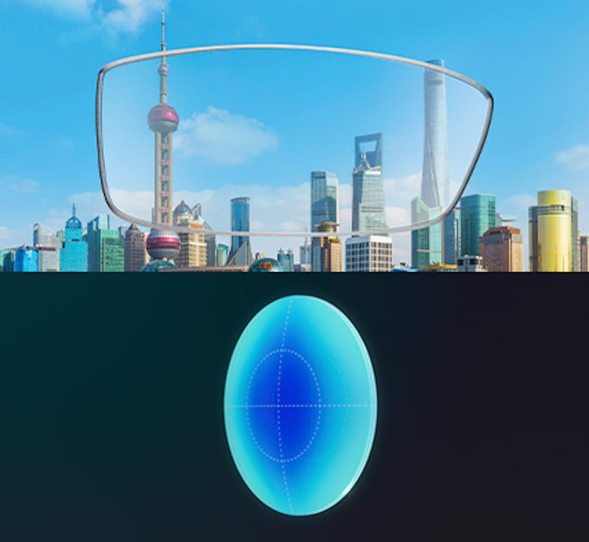
La multi-asphérisation exclusive Nikon, optimisée selon vos paramètres de porteur par le Nikon Optical Design Engine : une précision incomparable, y compris en périphérie.
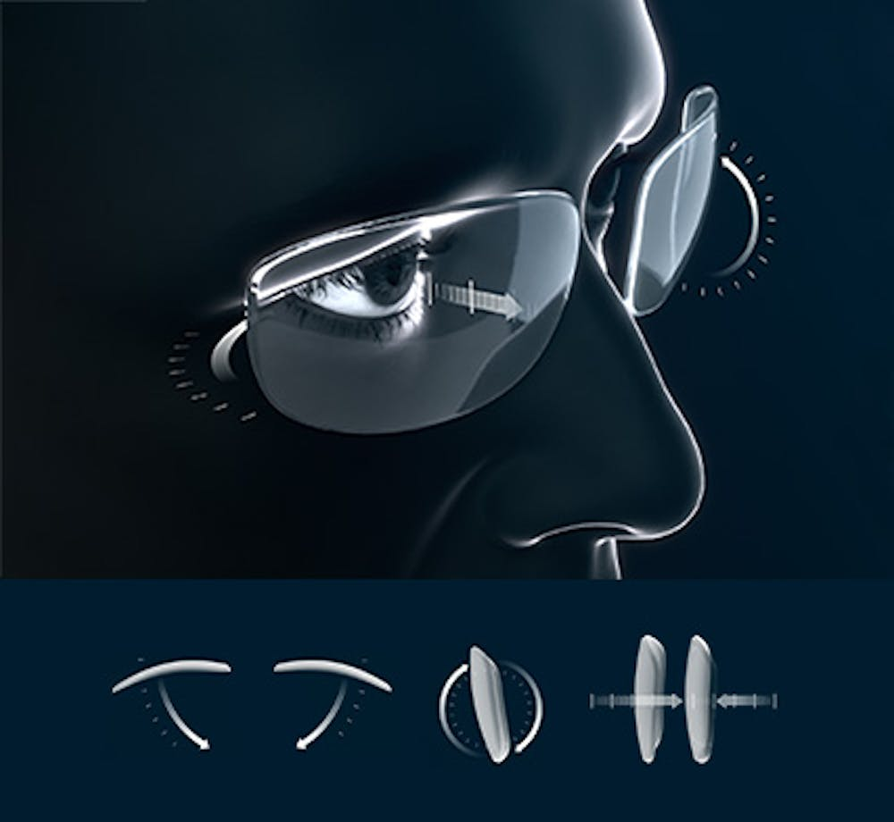
Le verre est optimisé en fonction de la forme de votre monture et de vos habitudes de port, pour une netteté exceptionnelle sans compromettre votre apparence.
Le verre progressif qui s'adapte à votre style de vie. Inspiré de votre quotidien pour profiter de chaque instant, il embarque le meilleur des technologies Nikon.
Les porteurs de verres progressifs qui souhaitent avoir une seule paire de lunettes pour toutes leurs activités.
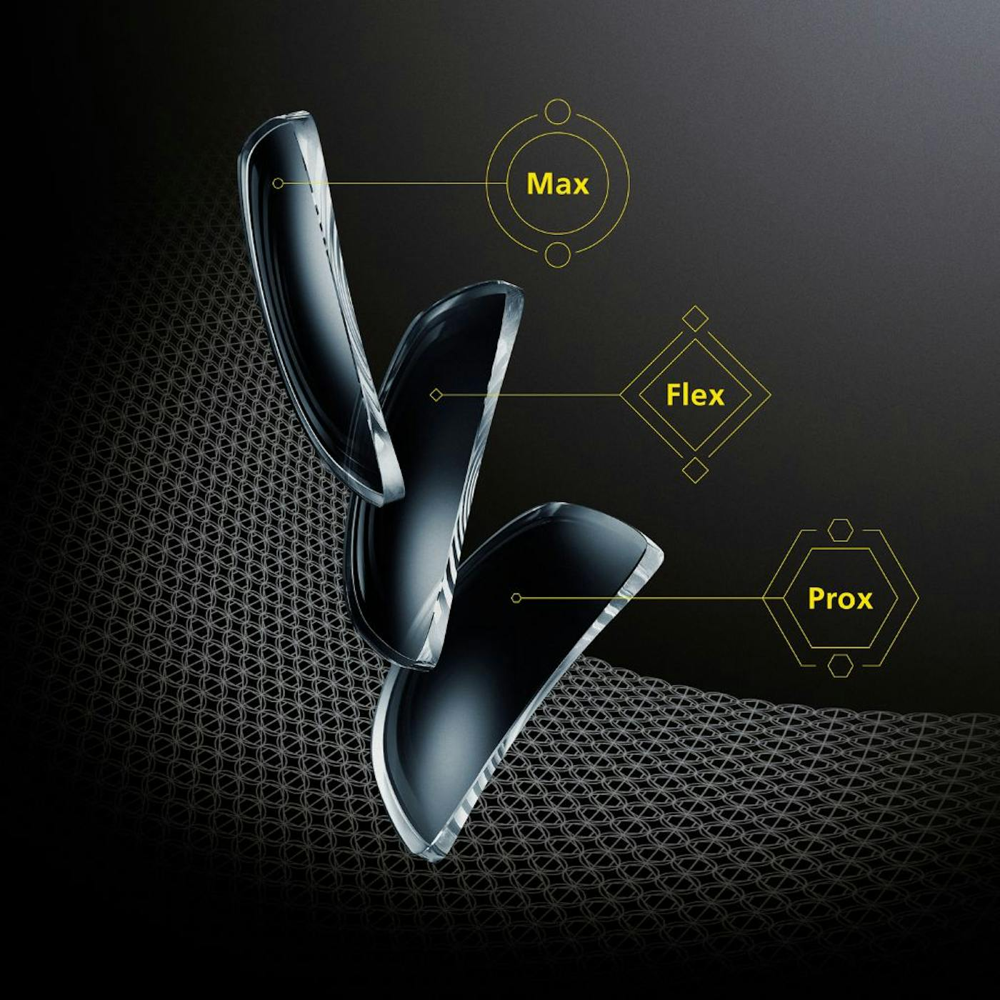
Enlever ses lunettes pour lire, s'agripper à la rampe dans les escaliers, une vue qui peine à suivre au tennis… Ces limites s'expliquent souvent par des verres qui ne vous sont pas totalement adaptés.
Dynamique ? Il vous faut une vision de loin large. Plutôt casanier ? Une zone de vision de près plus importante. YourLife est conçu pour votre rythme, pas l'inverse : une seule paire pour toutes vos activités.
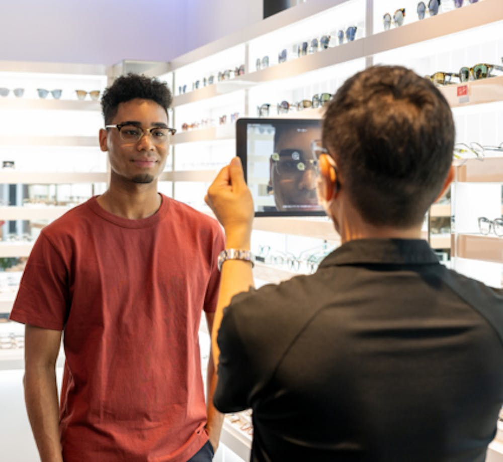
Nikon détermine la zone du verre que vos yeux utilisent le plus dans vos activités favorites, puis en optimise particulièrement la surface optique : vous êtes confortable en un clin d'œil.
Avec la technologie Z-Contrast, les verres progressifs Nikon Z Suite offrent une zone de vision de près conçue pour améliorer la perception du contraste : mise au point, clarté et luminosité transformées.
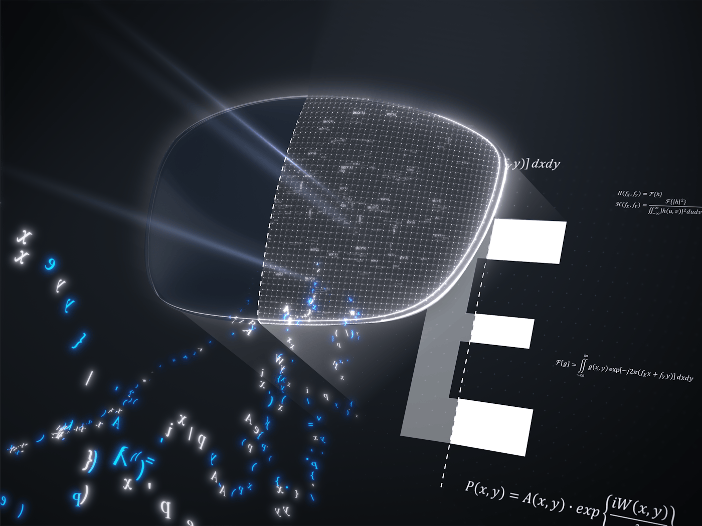
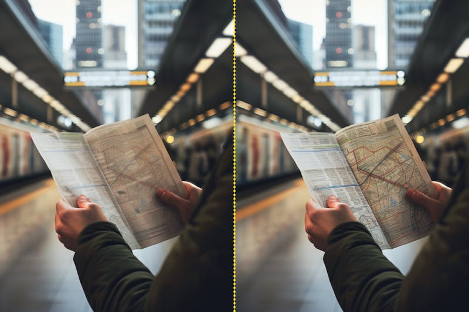
Distinguez tous les détails en vision de près grâce à une perception du contraste améliorée, quelles que soient les conditions de luminosité.
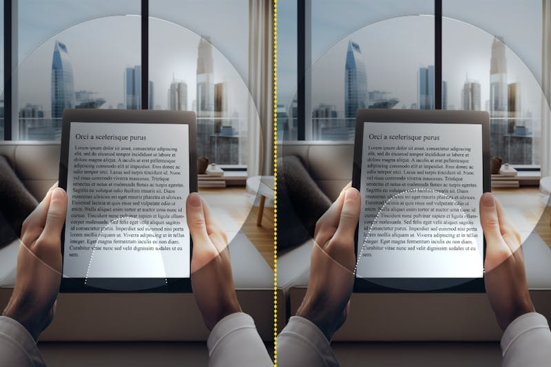
Bénéficiez d'une vision claire et élargie en vision de près, pour lire et travailler sans effort.
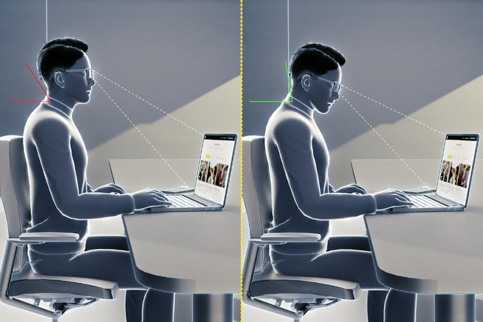
Profitez d'une vision confortable sans changer votre direction de regard ou votre posture.
Visuels et descriptifs produits : Nikon Lenswear France.